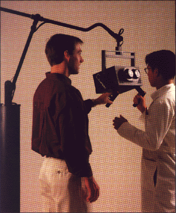
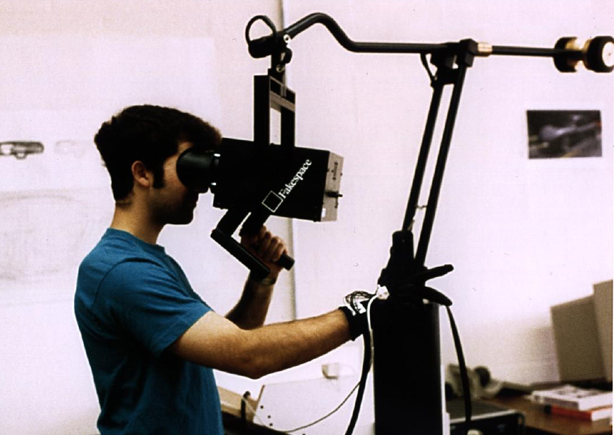

Fakespeare BOOM
Press your face against a CRT on a counterbalanced mechanical arm — immersive VR with zero latency, zero weight on your head

Overview
The BOOM (Binocular Omni-Orientation Monitor) was a head-coupled stereoscopic display system built by Fake Space Labs in Mountain View, California, beginning in 1989. Rather than mount CRTs directly on the user's head — the approach taken by VR headsets like the VPL EyePhone — the BOOM suspended two high-resolution CRTs and LEEP wide-angle optics inside a viewing hood attached to a spring-counterbalanced, multi-link articulated arm. The user gripped two handles on the hood, pressed their face into the optics, and physically guided the display to any position within its operational volume. Optical encoders in each joint of the arm provided real-time 6-DOF head tracking with effectively zero latency, since the tracking was intrinsic to the display mount itself.
Three models were produced: the BOOM 2 (monochrome), BOOM 2C (16-bit color), and BOOM 3C (full color). All ran at 1280×1024 resolution per eye — extraordinarily high for the era, eclipsing the ~200×300 pixel LCDs found in contemporary HMDs. Stereo FOV ranged up to approximately 100° horizontally (140° with spherical wide-angle optics). The BOOM 2 sold for approximately $27,000. The system was first shown publicly at SIGGRAPH 1991.
Fakespeare Labs was founded in 1988 by Mark Bolas, Ian McDowall, and Eric Lorimer. The company split into Fakespeare Labs (R&D) and Fakespeare Systems (commercial) in 1998; Fakespeare Systems was acquired by Mechdyne Corporation in 2003. BOOM systems were deployed at NASA Ames Research Center, Sandia National Laboratories, SRI International, Boeing, DaimlerChrysler, and numerous university VR labs for scientific visualization, computational fluid dynamics, and molecular modeling. The BOOM's mechanical approach to immersive display — trading wearability for precision and rendering quality — represents a unique design philosophy in VR history, and Bolas' subsequent work at USC's Institute for Creative Technologies directly influenced the modern VR renaissance through his mentorship of Oculus founder Palmer Luckey.
Deep dive
Mark Bolas' 1988-89 Master's thesis at Stanford, 'Design and Virtual Environments,' was among the first efforts to map the breadth of virtual reality as a new medium. The BOOM emerged directly from this research and from Bolas' work at NASA Ames Research Center's telepresence projects. Bolas co-founded Fakespeare Inc. in 1988 with Ian McDowall and Eric Lorimer specifically to build instrumentation for VR research labs. The BOOM's mechanical design was ingenious in its constraints. A multi-link arm, similar to a desk lamp suspension but precision-engineered, supported the weight of two small CRTs (approximately 1.5-2 inch Sony tubes) and LEEP optics housed in a viewing hood. A spring counterbalance system — covered by US Patent 5,253,832 (filed July 26, 1991, issued October 19, 1993) — made the hood effectively weightless to the user. Optical encoders at each joint provided 6-DOF position and orientation tracking with resolution far finer than the magnetic or ultrasonic trackers of the era, and with no measurable latency since the tracking signal path was purely mechanical-electrical with no computer vision or radio processing required. The display resolution — 1280×1024 stereo per eye — was driven by the host workstation's graphics pipeline. The BOOM acted essentially as a specialized CRT monitor with integrated tracking. Three models offered different color capabilities: BOOM 2 (monochrome, green phosphor), BOOM 2C (16-bit color using two primary colors), and BOOM 3C (full 24-bit color). Stereo separation was achieved through the dual-CRT/LEEP optics arrangement, with options for spherical wide-angle and flat medium-field focal lengths.
Using the BOOM was a physical, embodied experience unlike donning a headset. The user approached the viewing hood, grasped two handles on either side, and pressed their eyes against the optical ports. To look around a virtual environment, they physically pushed, pulled, and rotated the hood through space — the articulated arm translating their body movements into viewpoint changes with perfect 1:1 correspondence. There was no weight on the head, no cables snaking to the floor, no calibration drift. If you wanted to see what was behind you, you physically turned your body and pulled the hood with you. The BOOM occupied an intermediate position between CAVE-style projection environments (where the user walks freely inside a room) and HMDs (where the display is worn). It offered the rendering quality and precision of a fixed workstation monitor with the immersiveness of a head-worn display, at the cost of restricting movement to the arm's reach. This made it particularly well-suited for seated or standing-in-place applications like molecular docking, CAD review, and vehicle interior inspection — tasks where precise visual fidelity mattered more than room-scale movement. The BOOM was often paired with Fakespeare's other inventions, including the Pinch Glove (a fabric glove with conductive fingertips that detected pinching gestures for 3D manipulation) and the PUSH (a pressure-sensitive handheld input device). Together they formed an integrated immersive workbench for scientific and engineering visualization.
The BOOM represents the high-water mark of a design philosophy that prioritized visual fidelity and tracking precision over wearability and affordability. As LCD technology improved and HMDs shrank, the mechanical-boom approach became less attractive relative to the freedom of untethered (or at least head-mounted) VR. But the BOOM's influence persisted in several ways. Fakespeare Labs later developed the RAVE (Reconfigurable Advanced Visualization Environment), a modular large-screen projection VR system; the ImmersaDesk, a drafting-table-style VR display; and the Fakespeare Workbench — all products that, like the BOOM, emphasized extremely high-quality stereoscopic rendering for professional and scientific users. The company's software library, VLIB, became a widely-used open-source framework for VR application development. Mark Bolas went on to become a professor at USC's School of Cinematic Arts, where he directed the Mixed Reality Lab and the Interactive Narrative and Immersive Technologies Lab. There, in 2011-2012, he and his students designed an open-source HMD using off-the-shelf mobile phone components — a project that directly inspired his lab assistant, Palmer Luckey, to build the Oculus Rift. Bolas received the IEEE VGTC Virtual Reality Technical Achievement Award in 2005. He later joined Microsoft's HoloLens team. Fakespeare Systems was acquired by Mechdyne Corporation in 2003, which continued to support BOOM installations for existing customers. Individual BOOM units occasionally surface at university surplus sales and VR history collections. The BOOM's patent, the spring counterbalanced suspension system (5,253,832), remains a key document in immersive display engineering.
Team & pioneers
- Mark Bolas. Co-founder, lead inventor; Master's thesis at Stanford on VR design space; later USC professor and mentor to Palmer Luckey
- Ian McDowall. Co-founder of Fakespeare Inc.; hardware engineering
- Eric Lorimer. Co-founder of Fakespeare Inc.
Media

Sources
- Stanford CDR: Fakespeare Labs BOOM 3C specifications
- VRArchitect: BOOM display description with photos
- Wikipedia: Mark Bolas — co-founder, BOOM inventor, USC professor
- Wikipedia: Ian McDowall — co-founder of Fakespeare Inc.
- AWE Hall of Fame: Mark Bolas — BOOM, Pinch Glove, RAVE, mentor to Palmer Luckey
- US Patent 5,253,832: Spring counterbalanced boom suspension system (Bolas, filed 1991, issued 1993)
- Bolas, M.T. (1994). Human factors in the design of an immersive display. IEEE Computer Graphics and Applications, 14(1), 55-59.
- The Verge: VR music videos from the '90s were amazing (Fakespeare BOOM footage)